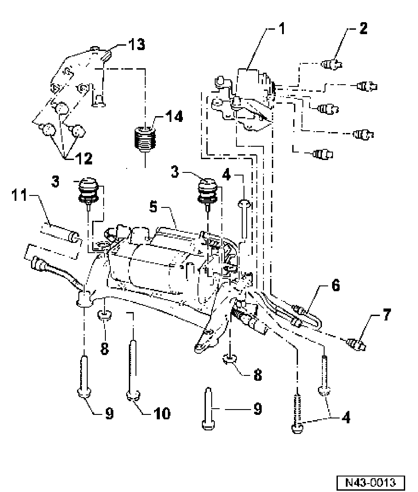

Self-Leveling Suspension, Servicing
Self-leveling suspension, servicing
Air supply unit with solenoid valve block

1. Solenoid valve block
^ Remove to replace air supply unit
2. Air line
^ 4 Nm
^ Clean connections before loosening
^ Air escapes when loosening connections
^ Protect thread unions from dirt.
3. Rubber bushing
^ Replace as a complete unit
4. Bolt
^ 9 Nm
5. Air supply unit
^ Remove floor trim to remove
6. Air line
^ 4 Nm
^ Between solenoid valve block and air supply unit
^ Clean line connections before loosening
^ Air escapes when loosening connections
^ Protect threaded connections from dirt
7. Air line
^ 4 Nm
^ Between solenoid valve block and tire inflation connector
^ Clean line connections before loosening
^ Air escapes when loosening connections
^ Protect threaded connections from dirt
8. Hex nut
^ 9 Nm
9. Bolt
^ 20 Nm
10. Bolt
^ 20 Nm
11. Intake line
12. Bolt
^ 20 Nm
13. Bracket
14. Rubber bushing
^ Replace as a complete unit